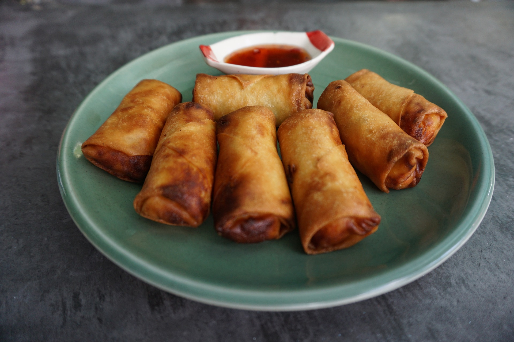

Springrolls mit Gemüse
Frühlingsrollen sind ein Asiatische Klassiker. Dass diese nicht ungesund sein müssen und wie du Frühlingsrollen mit Reispapier
ganz einfach zu Hause im Backofen machen kannst, zeige ich dir in diesem Rezept
Lust auf was Neues?

Paella

Springrolls

Corissants
Pfane vs. Wok - Was ist besser ?
Ob Pfanne oder Wok besser ist, hängt von den individuellen Kochbedürfnissen und Vorlieben ab. Eine Pfanne eignet sich gut für das Braten von größeren Fleischstücken, Fisch oder empfindlichen Gerichten wie Eiern, während ein Wok ideal für das schnelle Anbraten von Gemüse, Fleisch und anderen Zutaten bei hohen Temperaturen ist